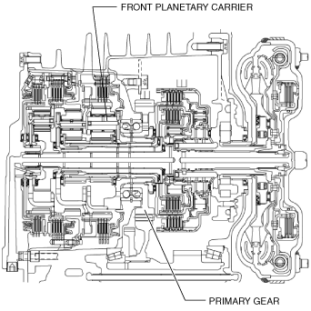

PRIMARY GEAR [EW6A-EL]
id0517l2351900
Purpose/Function
• The primary gear transmits the drive force converted by the 3-piece planetary gear to the secondary gear.
Construction
• The primary gear is engaged with the front planetary carrier and rotates as a single unit.

am3uun00002451